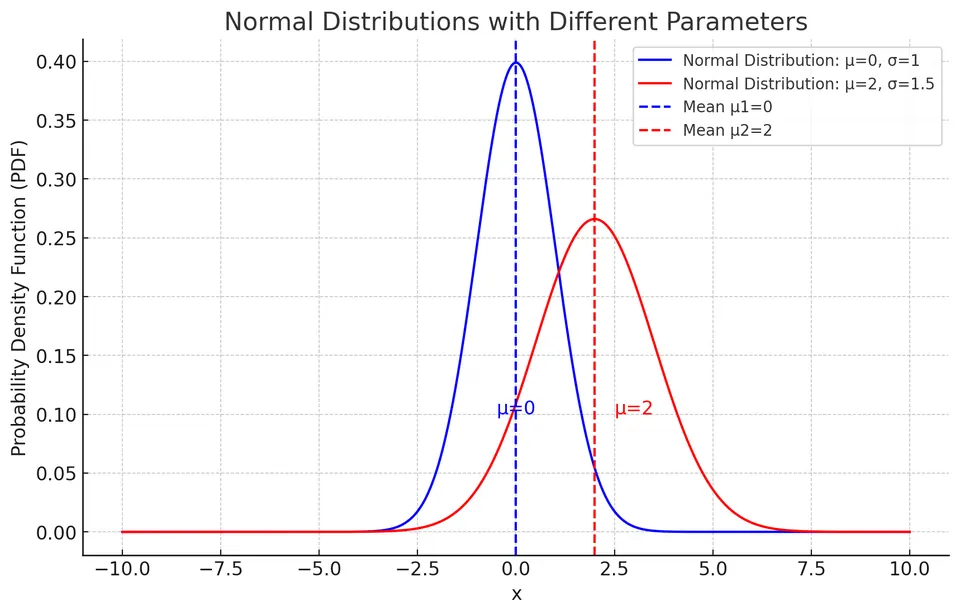
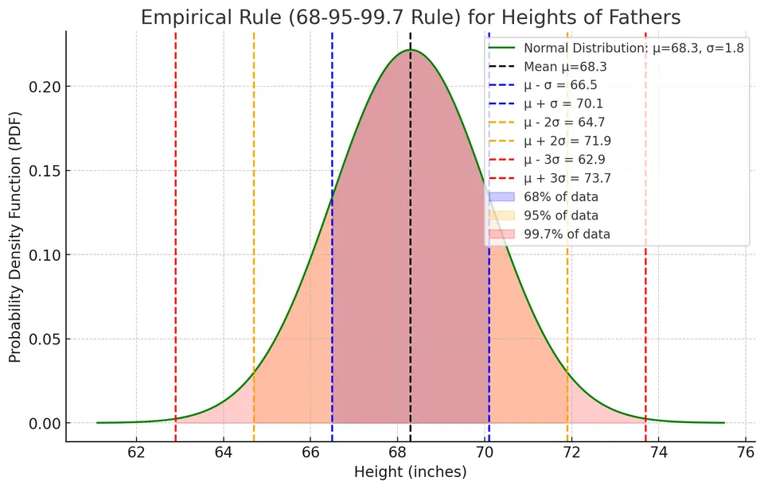
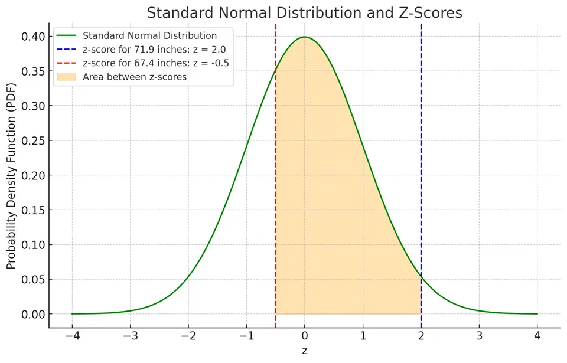

The Normal Curve and Z-Scores
A z-score expresses a value's distance from a mean in standard-deviation units. It turns a height difference in inches or a score difference in points into a dimensionless comparison. When the original variable is normal, this transformation also gives a shared probability scale: the standard normal distribution.
Separate those two uses. Standardizing any variable with a finite mean and positive finite variance gives mean 0 and variance 1. It does not make a skewed or multimodal variable normal. Reading normal probabilities from a z-score requires a normal model or a justified normal approximation.
What the normal curve describes
For $X\sim\mathcal N(\mu,\sigma^2)$ with $\sigma>0$, the density is
$$ f(x\mid\mu,\sigma^2)=\frac{1}{\sigma\sqrt{2\pi}} e^{-(x-\mu)^2/(2\sigma^2)}. $$
The mean $\mu$ sets the center, the variance $\sigma^2$ sets squared spread, and the standard deviation $\sigma$ sets spread in the data's units. The constants $e$ and $\pi$ are Euler's number and pi. Values equally far above and below $\mu$ have the same density. The total area is 1, and interval areas are probabilities.

An approximately normal model can be useful for heights within a suitably defined population or for some measurement errors. Pooling distinct populations can create a mixture instead of one normal curve. Some IQ-score scales are standardized to a mean of 100 and standard deviation of 15, with an approximately normal reference distribution. That construction does not make every set of observed scores exactly normal.
Incomes and house prices often have long right tails: a small number of large values pull the mean upward. Applying z-score arithmetic to such data can describe relative distance, but it does not justify using normal tail areas for those scores.
The empirical rule and its limits
Under a normal model, the probability within $c$ standard deviations of the mean is $P(-c\le Z\le c)$. For $c=1,2,3$, the probabilities are approximately 68.27%, 95.45%, and 99.73%, commonly summarized as the 68–95–99.7 rule.
These are population probabilities, not fixed percentages that must appear in every finite sample. They also differ from an exact central 95% interval, whose standardized endpoints are approximately $\pm1.96$, not exactly $\pm2$.
Example: fathers' heights
Suppose the modeled population of fathers has normal heights with $\mu=68.3$ inches and $\sigma=1.8$ inches. Moving one, two, and three standard deviations from the center gives
| Distance from the mean | Boundary calculation | Range in inches | Normal probability |
|---|---|---|---|
| $\mu\pm\sigma$ | $68.3\pm1.8$ | 66.5 to 70.1 | about 68.27% |
| $\mu\pm2\sigma$ | $68.3\pm3.6$ | 64.7 to 71.9 | about 95.45% |
| $\mu\pm3\sigma$ | $68.3\pm5.4$ | 62.9 to 73.7 | about 99.73% |

These bands describe the distribution of individual heights. They are not confidence intervals for an estimated mean, which address sampling uncertainty in a different quantity.
Calculating and interpreting a z-score
Subtracting the mean centers the measurement; dividing by the positive standard deviation changes its units:
$$ z=\frac{x-\mu}{\sigma}. $$
A score of 0 is at the mean, a positive score is above it, and a negative score is below it. The magnitude is the distance in standard deviations. Dividing by variance instead would give the wrong units and would not perform standardization.
For a father 71.9 inches tall,
$$ z=\frac{71.9-68.3}{1.8}=\frac{3.6}{1.8}=2. $$
For a father 67.4 inches tall,
$$ z=\frac{67.4-68.3}{1.8}=\frac{-0.9}{1.8}=-0.5. $$
The first height is two standard deviations above the mean; the second is half a standard deviation below it. The minus sign describes direction, not a negative height or a negative probability.
Why one standard normal table is enough
If $X$ is normal, $Z=(X-\mu)/\sigma$ is normal with mean 0 and standard deviation 1. Define its CDF as $\Phi(z)=P(Z\le z)$. Then
$$ P(X\le x)=\Phi\left(\frac{x-\mu}{\sigma}\right). $$
Changing the original mean or measurement units changes the raw cutoff but not this standardized probability calculation. A z-table may report left-tail areas, upper-tail areas, or areas between zero and $z$; inspect its heading before using an entry.
For a left-tail table, $\Phi(0)=0.5$, $P(Z>z)=1-\Phi(z)$, and symmetry gives $\Phi(-z)=1-\Phi(z)$. These relationships let one table answer several different event questions without changing the model.
What standardization does not establish
The arithmetic of centering and scaling explains the moments directly: $E[(X-\mu)/\sigma]=0$ and $\mathrm{Var}[(X-\mu)/\sigma]=\sigma^2/\sigma^2=1$. Those two moments do not specify the shape. For example, standardizing a uniform variable on $[0,1]$ produces another uniform variable, now on $[-\sqrt3,\sqrt3]$. It has mean 0 and variance 1, but cannot exceed 2 in magnitude. A standard normal variable can. Using a normal table for the standardized uniform variable would therefore give incorrect tails.
For observed data, a descriptive score often uses the sample mean $\bar x$ and sample standard deviation $s$: $z_i=(x_i-\bar x)/s$. This centers and rescales that dataset, provided $s>0$, but estimating the reference values does not establish a normal population. An inference procedure for an estimated mean must also account for its sampling uncertainty; a z-score of an individual observation and a standardized sample-mean statistic are different quantities.
Finding the area between two heights
To find the proportion between 67.4 and 71.9 inches, standardize both endpoints using the same mean and standard deviation:
$$ z_{67.4}=\frac{67.4-68.3}{1.8}=-0.5, \qquad z_{71.9}=\frac{71.9-68.3}{1.8}=2. $$
The left-tail areas are approximately $\Phi(-0.5)=0.3085$ and $\Phi(2)=0.9772$. The area through the upper endpoint includes the unwanted lower tail, so subtract it:
$$ P(67.4\le X\le71.9)=\Phi(2)-\Phi(-0.5) \approx0.9772-0.3085=0.6687. $$
The modeled proportion is about 66.87%. Adding the two CDF values would count overlapping left-tail regions rather than the interval between the cutoffs.

For an upper-tail question such as a height above 71.9 inches, use $1-\Phi(2)\approx0.0228$. Because the model has a density, changing the inequality at an exact endpoint does not change these probabilities.
As a check, symmetry gives the same probability below 64.7 inches, which is two standard deviations below the mean. Subtracting both tails leaves about $1-2(0.0228)=0.9544$, with the small discrepancy from 0.9545 due to table rounding.
Percentile ranks and percentile cutoffs
There are two inverse questions. Given a raw value $x$, its model percentile rank is $100\Phi((x-\mu)/\sigma)$. Given a desired probability $q$, find the cutoff below which that proportion lies:
$$ z_q=\Phi^{-1}(q),\qquad x_q=\mu+\sigma z_q. $$
The inverse CDF takes a probability between 0 and 1 and returns a value; the ordinary CDF takes a value and returns a probability. Confusing these directions is a common source of incorrect table lookups.
Example: the 30th percentile
For $q=0.30$, the standard normal cutoff is $z_{0.30}\approx-0.5244$. It is negative because the 30th percentile is below the median. Using a table rounded to $z=-0.52$ gives the original-scale calculation
$$ x_{0.30}\approx68.3+(-0.52)(1.8) =68.3-0.936=67.364\text{ inches}. $$
Using the more precise z-score instead gives about 67.3561 inches. Both round to about 67.36 inches at two decimal places. Round after the transformation when precision matters, and distinguish rounding in a table from the mathematical definition of the quantile.
The same method applies to any desired percentile under a normal model. A central interval keeps equal tail probabilities; a one-sided upper cutoff instead uses its single tail. Specify which event is intended before selecting the probability supplied to the inverse CDF.
Practice: Exercises with worked solutions